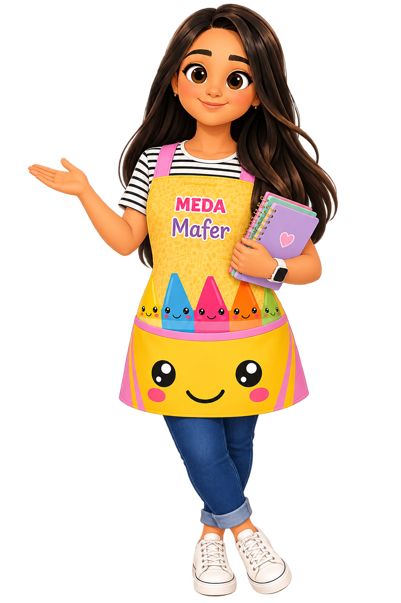

Enseñar a sentir también es acompañar.
20 estrategias de regulación emocional para docentes de educación básica, con materiales realmente imprimibles, orientaciones inclusivas y el acompañamiento de Mafer.

Todo lo necesario para intervenir
Propósitos, secuencias, tiempos y recomendaciones por nivel educativo.
Guías, apoyos visuales, tarjetas y seguimiento separados por estrategia.
Orientaciones para atender la diversidad sin etiquetar a los alumnos.
¿Qué quieres acompañar hoy?
Compendio completo de materiales para imprimir
Un único PDF con las 20 estrategias y sus recursos para el aula. No se requiere cuenta.
20 estrategias, un mismo propósito.
Selecciona una estrategia, consulta la ficha y descarga su kit completo.
No encontramos coincidencias; prueba otro término o categoría.
Ensayo sin puntuación ni respuestas obligatorias. Selecciona una opción para hablar sobre ella con el grupo.
Listos para imprimir
🖨️ Materiales para imprimir
Accede directamente a los recursos físicos que necesita el docente, separados por estrategia. Todos son PDF tamaño carta y funcionan sin registro.
85 páginas, organizadas por estrategia. También puedes seleccionar un solo kit.
Guía para docentes
Orientaciones para una intervención accesible, ética y contextualizada.
Antes
Observa necesidades y barreras del contexto. Presenta los recursos durante un momento de tranquilidad, no solamente en un conflicto. Pregunta qué apoyos resultan cómodos.
Durante
Modela, ofrece alternativas de comunicación y respeta la decisión de no participar. Evita interpretar el silencio como falta de interés o exigir tranquilidad inmediata.
Después
Valora qué facilitó la participación y qué ajustes del entorno funcionaron. Un alumno puede necesitar más de una opción; ninguna estrategia funciona igual para todos.
Para USAER
Registra contexto, accesibilidad, apoyos y participación en lugar de centrarte únicamente en conductas observables. Comparte hallazgos con el docente desde la colaboración.
💜 Consejo de Mafer
El objetivo no es suprimir emociones, sino enseñar y ofrecer apoyos para reconocerlas, expresarlas y responder de manera segura. Si una situación rebasa los apoyos del aula, sigue los protocolos institucionales correspondientes.
Registro breve de aplicación
Una bitácora local para documentar qué estrategias se aplicaron y qué ajustes favorecieron la participación.